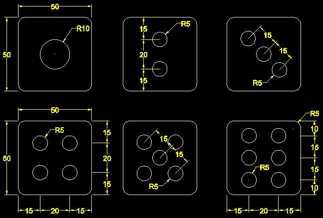

記得之前上課有教過一個簡單的 骰子範例，剛好最近蘋果媽在學習3d，老婆大人交代我製作影片範例...
所以藉此機會也與大家分享，建模的方式百百種，可以依照個人指令操做的熟練度來建構3d，而我的方式也只是其中一種而已，在此供各位參考參考，有興趣的朋友可以來練習看看!!
我在這提供了2種方式，第一種花了約9分30秒，第二種花了約5分30秒，由此可以證明認識越多功能、操作越熟練，即可大大提昇工作效率呢(這就是新版本新功能的價值所在)，畫好的成員們請將您的3d成品圖片po上來分享喔!!
請記得說明以下事項(參與練習的朋友將獲得 威望值+6):
1.3d成品圖片
2.建模所用到的指令(大概就好)
3.使用的AutoCAD版本
4.建模所需時間
5.您的意見補充
範例下載:
https://app.box.com/s/e3lioomwwvf1krpxdzjc6ytc1qon9f2c
備用：

骰子貼材質練習於下回推出~請期待!!
2010/08/03 補充:
{練習}3D骰子-貼材質範例...(威望+6)